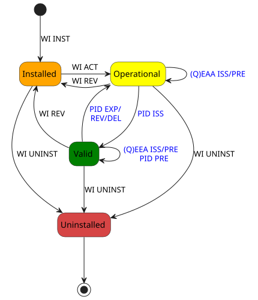
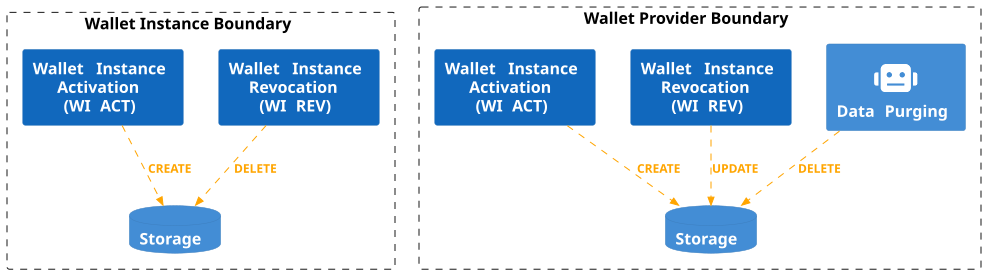
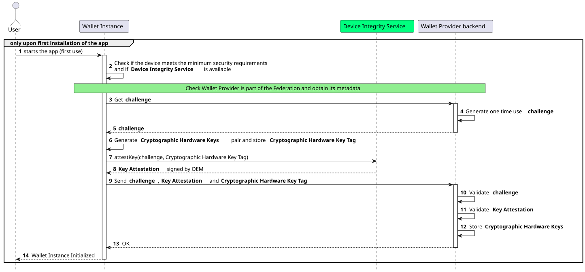
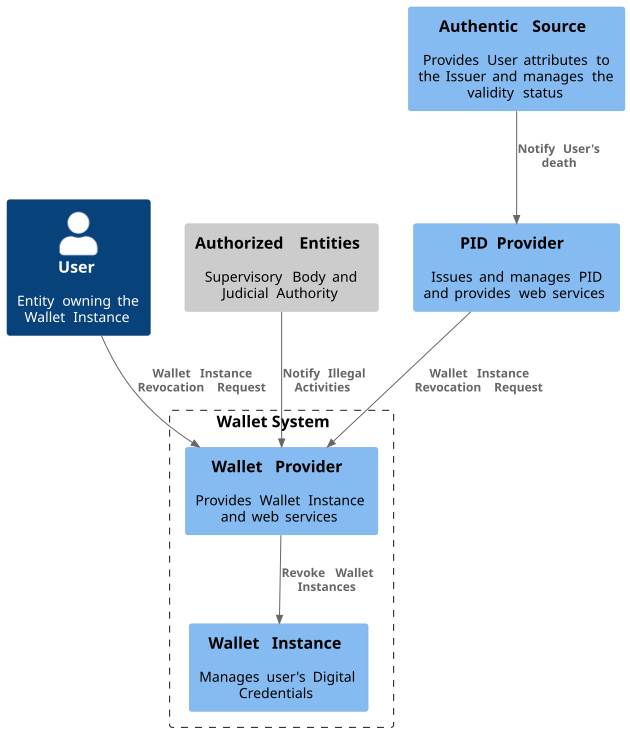

Wallet Solution¶
The Wallet Solution is issued by the Wallet Provider in the form of a mobile app and services, such as web interfaces.
The mobile app serves as the primary interface for Users, allowing them to hold their Digital Credentials and interact with other participants of the ecosystem, such as Credential Issuers and Relying Parties.
These Credentials are a set of data that can uniquely identify a natural or legal person, along with other Qualified and non-qualified Electronic Attestations of Attributes, also known as QEAAs and EAAs respectively, or (Q)EAAs for short[1].
Once a User installs the mobile app on their device, such an installation is referred to as a Wallet Instance for the User.
By supporting the mobile app, the Wallet Provider enusers the security and reliability of the entire Wallet Solution, as it is responsible for issuing the Wallet Attestation, which is a cryptographic proof about the authenticity and integrity of the Wallet Instance.
Wallet Solution Requirements¶
This section lists the requirements that are be met by Wallet Providers and Wallet Solutions.
The Wallet Provider MUST offer a RESTful set of services for issuing the Wallet Attestations.
The Wallet Instance MUST periodically reestablish trust with its Wallet Provider.
The Wallet Instance MUST establish trust with other participants of the Wallet ecosystem, such as Credential Issers and Relying Parties.
The Wallet Solutions MUST adhere to the specifications set by this document for obtaining Personal Identification (PID) and (Q)EAAs.
The Wallet Instance MUST be compatible and functional on both Android and iOS operating systems and available on the Play Store and App Store, respectively.
The Wallet Instance MUST provide a mechanism to verify the User's actual possession and full control of their personal device.
Wallet Instance¶
The Wallet Instance serves as a unique and secure device for authenticating the User within the Wallet ecosystem. It establishes a strong and reliable mechanism for the User to engage in various digital transactions in a secure and privacy-preserving manner.
The Wallet Instance allows other entities within the ecosystem to establish trust with it, by consistently presenting a Wallet Attestation during interactions with PID Providers, (Q)EAA Providers, and Relying Parties. These verifiable attestations, provided by the Wallet Provider, serve to authenticate the Wallet Instance itself, ensuring its reliability when engaging with other ecosystem actors.
To guarantee the utmost security, these cryptographic keys MUST be securely stored within the WSCD, which MAY be internal (device's Trusted Execution Environment (TEE)[3]), external, or hybrid. This ensures that only the User can access them, thus preventing unauthorized usage or tampering. For more detailed information, please refer to the Wallet Attestation section and the Trust Model section of this document.
Wallet Instance Lifecycle¶
The Wallet Provider is in charge of the implementation and provision of Wallet Instances also handling their entire lifecycle.
In this section, state machines are presented to explain the Wallet Instance and Digital Credential states and their transitions and relations.
Note
PID is specialized Digital Credential type that produces impacts on the Wallet Instance's lifecycle. The revocation of the PID MAY also have potential impacts on (Q)EAAs, if these was issued using the presentation of the PID. When the distinction between PID and (Q)EAA is not needed, the term Digital Credential is used.
Note
In the current version of EIDAS-ARF, two types of attestations have been introduced: Wallet Trust Evidence (WTE) and Wallet Instance Attestation (WIA). The first to prove that the keys used for key binding of Digital Credentials reside in a trustworthy WSCD, the second to prove that the Wallet Instance is authentic. In this technical specification, a single attestation (Wallet Attestation) is used as proof of both the Wallet Instance authenticity and WSCD trustworthiness. The future version of this specification will be updated accordingly.
As shown in Fig. 2, the Wallet Instance has four distinct states: Installed, Operational, Valid, and Uninstalled. Each state represents a specific functional status and determines the actions that can be performed.

Fig. 2 Wallet Instance Lifecycle.¶
Note
The Wallet Provider MUST ensure the security and reliability of the Wallet Instances. To achieve this, the Wallet Provider MUST periodically checks the Wallet Instances security and compliance status.
Note
The Wallet Attestation is short-lived. It MUST be automatically re-issued before its expiration time. For this reason, the Wallet Instance expiration transition is not considered in Fig. 2.
Transition to Installed¶
The state machine begins with the Wallet Instance installation (WI INST) transition, where Users download and install a Wallet Instance provided by the Wallet Provider using the official app store of their device's operating system (this ensures authenticity via system checks), leading to the Installed state.
When the state is Installed, the Wallet Instance MUST interact only with the Wallet Provider to be activated. When the revocation of the Wallet Instance occurs, the Wallet Instance MUST go back from Operational or Valid to Installed. The revocation marks the Wallet Cryptographic Hardware Key, registered during activation (see “Transition to Operational” section), as not usable anymore. Revocation can occur in the following cases:
for technical security reasons (e.g., relating to the compromise of cryptographic material);
in case of explicit User requests (e.g., due to loss, theft of the Wallet Instance);
death of the User;
illegal activities reported by Judicial or Supervisory Bodies.
Note
While for the ARF the revocation of the Wallet Instance is accomplished by revoking the Wallet Attestation (see Topic 9 and Topic 38 in Annex 2), in this specification the revocation is managed differently. Being the Wallet Attestation short-lived, it does not have a status management mechanism. For this reason, the Wallet Instance revocation transition is accomplished by deleting the Wallet Cryptographic Hardware Key from the WSCD of the Wallet Instance and from the account associated with the User. This transition is completed when the Wallet Instance is online.
Transition to Operational¶
After installation, the User opens the Wallet Instance and an activation begins (WI ACT). At this stage, a User account MUST be created with the Wallet Provider and associated with the Wallet Instance through the Wallet Cryptographic Hardware Key Tag, subject to obtaining the User's consent (see the “Wallet Instance Initialization and Registration” section for more details). This association allows the User to directly request Wallet Instance revocation from the Wallet Provider, and it also allows the Wallet Provider to revoke the Wallet Instance associated with that User.
Note
As a result of the User account creation, an authentication mechanism MUST be set for the User to interact with the Wallet Provider portal. This specification mandates the use of at least a second-factor for User authentication.
As part of the activation, the Wallet Provider MUST evaluate the operating system and general technical capabilities of the device to check compliance with the technical and security requirements, and the authenticity and integrity of the installed Wallet Instance. Upon successful verification, the Wallet Provider MUST issue at least one valid Wallet Attestation to the Wallet Instance, therefore the Wallet Instance enters the Operational state.
In addition, if not already done, Users MUST set their preferred method of unlocking their Wallet Instance; this MAY be accomplished by entering a personal identification number (PIN) or by utilizing biometric authentication, such as fingerprint or facial recognition, according to personal preferences and device's capabilities. Please refer to Wallet Attestation.
In the Operational state, Users can request the issuance of PID (PID ISS) or (Q)EAAs if the PID is not required in the issuance ((Q)EEA ISS). In addition, if the Digital Credentials are (Q)EEAs and for the presentation they do not require the PID, they can be presented without transitioning the Wallet Instance to another state ((Q)EEA PRE transition).
A Valid Wallet Instance MUST transition back to the Operational state due to PID EXP/REV/DEL transition, when the associated PID expires, or is revoked by its Provider or either deleted by the User.
Transition to Valid¶
A transition to the Valid state occurs only when the Wallet Instance obtains a valid PID (PID ISS). In this state, Users can obtain and present new (Q)EAAs ((Q)EAA ISS/PRE), and present the PID (PID PRE). Please refer to PID/(Q)EAA Issuance and Relying Party Solution.
Note
Users can have only one Wallet Instance in Valid state for the same Wallet Solution. Thus, when a User installs and obtains a PID on a new Wallet Instance of the same Wallet Solution from the same Wallet Provider, the PID in the previous Wallet Instance MUST be revoked and the Wallet Instance became Operational.
Transition to Uninstalled¶
Across all states, Installed, Actived, Operational, or Valid, the Wallet Instance can be removed entirely through the Wallet Instance uninstall (WI UNINST) transition, leading to the Uninstalled state. If a Wallet Instance is Uninstalled it ends its lifecycle.
Wallet Instance Lifecycle Management¶
While Fig. 2 shows the different states a Wallet Instance may acquire during its lifecycle, Fig. 3 shows the point of view of Wallet Instances and Wallet Providers in managing the Wallet Instance lifecycle and the effect on their local storage.

Fig. 3 Wallet Instance Lifecycle Management.¶
Through a Wallet Instance in an Installed state, a User is able to start the Wallet Instance Activation (WI ACT). As a result, the Wallet Instance MUST create a Wallet Cryptographic Hardware Key pair. In addition, if not already done, Users MUST set their preferred method of unlocking their Wallet Instance. As a result of the Wallet Instance Revocation (WI REV), the Wallet Instance MUST delete the Wallet Cryptographic Hardware Key pairs.
A Wallet Provider instead is responsible for:
Wallet Instance Activation (WI ACT): a User account MUST be created and associated with the Wallet Instance through the Wallet Cryptographic Hardware Key Tag. As a result of the User account creation, an authentication mechanism of at least two factors MUST be set for the User to interact with the Wallet Provider portal.
Wallet Instance Revocation (WI REV): for technical security reasons or triggered by external entities (e.g., Users and Supervisory Bodies) the Wallet Cryptographic Hardware Key Tag MUST be deleted from the User account.
Data Purging: through an explicit request of Users, the User account at the Wallet Provider MUST be removed from the local storage.
Wallet Provider Endpoints¶
The Wallet Provider that issues the Wallet Attestations MUST make its APIs available in the form of RESTful services, as listed below.
Wallet Provider Entity Configuration¶
An HTTP GET request to the /.well-known/openid-federation endpoint allows the retrieval of the Wallet Provider Entity Configuration.
The returning Entity Configuration of the Wallet Provider MUST contain the attributes described in the sections below.
The Wallet Provider Entity Configuration is a signed JWT containing the public keys and supported algorithms of the Wallet Provider metadata definition. It is structured in accordance with the OpenID Connect Federation and the Trust Model section outlined in this specification.
Wallet Provider Entity Configuration JWT Header¶
Key |
Value |
|---|---|
alg |
Algorithm used to verify the token signature. It MUST be one of the possible values indicated in this table (e.g., ES256). |
kid |
Thumbprint of the public key used for signing, according to RFC 7638. |
typ |
Media type, set to |
Wallet Provider Entity Configuration JWT Payload¶
Key |
Value |
|---|---|
iss |
Public URL of the Wallet Provider. |
sub |
Public URL of the Wallet Provider. |
iat |
Issuance datetime in Unix Timestamp format. |
exp |
Expiration datetime in Unix Timestamp format. |
authority_hints |
Array of URLs (String) containing the list of URLs of the immediate superior Entities, such as the Trust Anchor or an Intermediate, that MAY issue an Entity Statement related to this subject. |
jwks |
A JSON Web Key Set (JWKS) RFC 7517 that represents the public part of the signing keys of the Entity at issue. Each JWK in the JWK set MUST have a key ID (claim kid). |
metadata |
Contains the |
wallet_provider metadata¶
Key |
Value |
jwks |
A JSON Web Key Set (JWKS) that represents the Wallet Provider's public keys. |
token_endpoint |
Endpoint for obtaining the Wallet Instance Attestation. |
nonce_endpoint |
HTTPs URL indicating the endpoint where the client can request the nonce. |
aal_values_supported |
List of supported values for the certifiable security context. These values specify the security level of the app, according to the levels: low, medium, or high. Authenticator Assurance Level values supported. |
grant_types_supported |
The types of grants supported by
the token endpoint. It MUST be set to
|
token_endpoint_auth_methods_suppor ted |
Supported authentication methods for the token endpoint. |
token_endpoint_auth_signing_alg_va lues_supported |
Supported signature algorithms for the token endpoint. |
Note
The aal_values_supported parameter is experimental and under review.
federation_entity metadata¶
Key |
Value |
organization_name |
Organization name. |
homepage_uri |
Organization's website URL. |
tos_uri |
URL to the terms of service. |
policy_uri |
URL to the privacy policy. |
logo_uri |
URL of the organization's logo in SVG format. |
Below a non-normative example of the Entity Configuration.
{
"alg": "ES256",
"kid": "5t5YYpBhN-EgIEEI5iUzr6r0MR02LnVQ0OmekmNKcjY",
"typ": "entity-statement+jwt"
}
.
{
"iss": "https://wallet-provider.example.org",
"sub": "https://wallet-provider.example.org",
"jwks": {
"keys": [
{
"crv": "P-256",
"kty": "EC",
"x": "qrJrj3Af_B57sbOIRrcBM7br7wOc8ynj7lHFPTeffUk",
"y": "1H0cWDyGgvU8w-kPKU_xycOCUNT2o0bwslIQtnPU6iM",
"kid": "5t5YYpBhN-EgIEEI5iUzr6r0MR02LnVQ0OmekmNKcjY"
}
]
},
"metadata": {
"wallet_provider": {
"jwks": {
"keys": [
{
"crv": "P-256",
"kty": "EC",
"x": "qrJrj3Af_B57sbOIRrcBM7br7wOc8ynj7lHFPTeffUk",
"y": "1H0cWDyGgvU8w-kPKU_xycOCUNT2o0bwslIQtnPU6iM",
"kid": "5t5YYpBhN-EgIEEI5iUzr6r0MR02LnVQ0OmekmNKcjY"
}
]
},
"token_endpoint": "https://wallet-provider.example.org/token",
"nonce_endpoint": "https://wallet-provider.example.org/nonce",
"aal_values_supported": [
"https://wallet-provider.example.org/LoA/basic",
"https://wallet-provider.example.org/LoA/medium",
"https://wallet-provider.example.org/LoA/high"
],
"grant_types_supported": [
"urn:ietf:params:oauth:client-assertion-type:jwt-client-attestation"
],
"token_endpoint_auth_methods_supported": [
"private_key_jwt"
],
"token_endpoint_auth_signing_alg_values_supported": [
"ES256",
"ES384",
"ES512"
]
},
"federation_entity": {
"organization_name": "IT-Wallet Provider",
"homepage_uri": "https://wallet-provider.example.org",
"policy_uri": "https://wallet-provider.example.org/privacy_policy",
"tos_uri": "https://wallet-provider.example.org/info_policy",
"logo_uri": "https://wallet-provider.example.org/logo.svg"
}
},
"authority_hints": [
"https://registry.eudi-wallet.example.it"
]
"iat": 1687171759,
"exp": 1709290159
}
Wallet Instance Initialization and Registration¶

Step 1: The User starts the Wallet Instance mobile app for the first time.
Step 2: The Wallet Instance:
Checks whether the device meets the minimum security requirements.
Checks if the Device Integrity Service is available.
Note
Federation Check: The Wallet Instance needs to check if the Wallet Provider is part of the Federation, obtaining its protocol-specific Metadata. A non-normative example of a response from the endpoint .well-known/openid-federation with the Entity Configuration and the Metadata of the Wallet Provider is represented within the section Wallet Provider metadata.
Steps 3-5: The Wallet Instance sends a request to the nonce endpoint of the Wallet Provider Backend and receives a one-time challenge. This "challenge" is a nonce, which MUST be unpredictable to serve as the main defense against replay attacks. The backend MUST generate the nonce value in a manner that ensures it is single-use and valid only within a specific time frame. This endpoint is compliant with the specification OAuth 2.0 Nonce Endpoint.
GET /nonce HTTP/1.1
Host: walletprovider.example.com
HTTP/1.1 200 OK
Content-Type: application/json
{
"nonce": "d2JhY2NhbG91cmVqdWFuZGFt"
}
If any errors occur during the nonce generation, the Wallet Provider MUST return an error response as defined in RFC 6749#section-5.2. The response MUST use application/json as the content type and MUST include the following parameters:
error. The error code.
error_description. Text in human-readable form providing further details to clarify the nature of the error encountered.
The following table lists HTTP Status Codes and related error codes that MUST be supported for the error response:
HTTP Status Code |
Error Code |
Description |
|---|---|---|
|
|
An internal server error occurred while processing the request. |
|
|
Service unavailable. Please try again later. |
Step 6: The Wallet Instance, through the operating system, creates a pair of Cryptographic Hardware Keys and stores the corresponding Cryptographic Hardware Key Tag in local storage once the following requirements are met:
It MUST ensure that Cryptographic Hardware Keys do not already exist. If they do exist and the Wallet is in the initialization phase, they MUST be deleted.
It MUST generate a pair of asymmetric Elliptic Curve keys (Cryptographic Hardware Keys) via a local WSCD.
It SHOULD obtain a unique identifier (Cryptographic Hardware Key Tag) for the generated Cryptographic Hardware Keys from the operating system. If the operating system permits specifying a tag during the creation of keys, then a random string for the Cryptographic Hardware Key Tag MUST be selected. This random value MUST be collision-resistant and unpredictable to ensure security. To achieve this, consider using a cryptographic hash function or a secure random number generator provided by the operating system or a reputable cryptographic library.
If the previous points are satisfied, it MUST store the Cryptographic Hardware Key Tag in local storage.
Note
WSCD: The Wallet Instance MAY use a local WSCD for cryptographic operations, including key generation, secure storage, and cryptographic processing, on devices that support this feature. On Android devices, Strongbox is RECOMMENDED; Trusted Execution Environment (TEE) MAY be used only when Strongbox is unavailable. For iOS devices, Secure Elements (SE) MUST be used. Given that each OEM offers a distinct SDK for accessing the local WSCD, the discussion hereafter will address this topic in a general context.
If the WSCD fails during any of these operations, for example due to hardware limitations, it will raise an error response to the Wallet Instance (e.g., see TEE Client API Errors). The Wallet Instance MUST handle these errors accordingly to ensure secure operation. Details on error handling are left to the Wallet Instance implementation.
Step 7: The Wallet Instance uses the Device Integrity Service, providing the "challenge" and the Cryptographic Hardware Key Tag to acquire the Key Attestation.
Note
Device Integrity Service: In this section, the Device Integrity Service is considered as it is provided by device manufacturers. This service allows the verification of a key being securely stored within the device's hardware through a signed object. Additionally, it offers verifiable proof that a specific Wallet Instance is authentic, unaltered, and in its original state using a specialized signed document made for this purpose.
The service also incorporates details in the signed object, such as the device type, model, app version, operating system version, bootloader status, and other relevant information to assess whether the device has been compromised. For Android, the DIS is represented by Key Attestation, a feature supported by StrongBox Keymaster, which is a physical HSM installed directly on the motherboard, and the TEE (Trusted Execution Environment), a secure area of the main processor. Key Attestation aims to provide a way to strongly determine if a key pair is hardware-backed, what the properties of the key are, and what constraints are applied to its usage. Developers can leverage its functionality through the Play Integrity API. For Apple devices, the DIS is represented by DeviceCheck, which provides a framework and server interface to manage device-specific data securely. DeviceCheck is used in combination with the Secure Enclave, a dedicated HSM integrated into Apple's SoCs. DeviceCheck can be used to attest to the integrity of the device, apps, and/or encryption keys generated on the device, ensuring they were created in a secure environment like Secure Enclave. Developers can leverage DeviceCheck functionality by using the framework itself. These services, specifically developed by the manufacturer, are integrated within the Android or iOS SDKs, eliminating the need for a predefined endpoint to access them. Additionally, as they are specifically developed for mobile architecture, they do not need to be registered as Federation Entities through national registration systems. Secure Enclave has been available on Apple devices since the iPhone 5s (2013). For Android devices, the inclusion of Strongbox Keymaster may vary by manufacturer, who decides whether to include it or not.
If any errors occur in any DIS process, such as device integrity verification, for example, due to an unavailable DIS, an internal error, or an invalid nonce in the integrity request, the DIS raises an error response (e.g., see Play Integrity API Errors). The Wallet Instance MUST process these errors accordingly. Details on error handling are left to the Wallet Instance implementation.
Step 8: The Device Integrity Service performs the following actions:
Creates a Key Attestation that is linked with the provided "challenge" and the public key of the Wallet Hardware.
Incorporates information pertaining to the device's security.
Uses an OEM private key to sign the Key Attestation, therefore verifieable with the related OEM certificate, confirming that the Cryptographic Hardware Keys are securely managed by the operating system.
Step 9: The Wallet Instance sends the challenge with Key Attestation and Cryptographic Hardware Key Tag to the wallet-instance endpoint of the Wallet Provider Backend to register the Wallet Instance identified by the Cryptographic Hardware Key public key.
In order to register the Wallet Instance, the request to the Wallet Provider MUST use the HTTP POST method. The parameters MUST be encoded using the application/json format and included in the message body. The following parameters MUST be provided:
Claim |
Description |
Reference |
|---|---|---|
challenge |
MUST be set to the challenge obtained from the Wallet Provider throught the |
|
key_attestation |
It MUST be a |
|
hardware_key_tag |
It MUST be set with the unique identifier of the Cryptographic Hardware Keys and encoded in |
Below is a non-normative example of the request.
POST /wallet-instance HTTP/1.1
Host: walletprovider.example.com
Content-Type: application/json
{
"challenge": "0fe3cbe0-646d-44b5-8808-917dd5391bd9",
"key_attestation": "o2NmbXRvYXBwbGUtYXBw... redacted",
"hardware_key_tag": "WQhyDymFKsP95iFqpzdEDWW4l7aVna2Fn4JCeWHYtbU="
}
Note
It is not necessary to send the Wallet Hardware public key because it is already included in the key_attestation.
As seen in the previous steps, the Device Integrity Service (DIS) creates a Key Attestation linked to the provided "challenge" and the public key of the Wallet Hardware. This process eliminates the need to send the Wallet Hardware public key directly, as it is already included in the key attestation. The hardware_key_tag serves as a reference or identifier for the corresponding Cryptographic Hardware key stored by the Wallet Provider. Therefore, the Wallet Provider can associate the received hardware_key_tag with the appropriate Cryptographic Hardware key in its storage.
Warning
During the registration phase of the Wallet Instance with the Wallet Provider it is also necessary to associate it with a specific user uniquely identifiable by the Wallet Provider. This association is at the discretion of the Wallet Provider and will not be addressed within these guidelines as each Wallet Provider may or may not have a user identification system already implemented.
Steps 10-12: The Wallet Provider validates the challenge and key_attestation signature, therefore:
It MUST verify that the
challengewas generated by Wallet Provider and has not already been used.It MUST validate the
key_attestationas defined by the device manufacturers' guidelines.It MUST verify that the device in use has no security flaws and reflects the minimum security requirements defined by the Wallet Provider.
If these checks are passed, it MUST register the Wallet Instance, keeping the Cryptographic Hardware Key Tag and all useful information related to the device.
It SHOULD associate the Wallet Instance with a specific User uniquely identified within the Wallet Provider's systems. This will be useful for the lifecycle of the Wallet Instance and for a future revocation.
Upon successful registration of the Wallet Instance, the Wallet Provider MUST respond with a status code set to 204 (No Content). Below is a non-normative example of the response.
HTTP/1.1 204 No content
If any errors occur during the Wallet Instance registration, the Wallet Provider MUST return an error response as defined in RFC 7231, with additional details available in RFC 7807. The response MUST use the content type set to application/json and MUST include the following parameters:
error. The error code.
error_description. Text in human-readable form providing further details to clarify the nature of the error encountered.
Below is a non-normative example of an error response:
HTTP/1.1 403 Forbidden
Content-Type: application/json
Cache-Control: no-store
{
"error": "forbidden",
"error_description": "The provided challenge is invalid, expired, or already used."
}
The following table lists HTTP Status Codes and related error codes that MUST be supported for the error response, unless otherwise specified:
HTTP Status Code |
Error Code |
Description |
|---|---|---|
|
|
The request is malformed, missing required parameters, or includes invalid and unknown parameters. |
|
|
The device does not meet the Wallet Provider’s minimum security requirements. |
|
|
The provided challenge is invalid, expired, or already used. |
|
|
The signature of the Key Attestation is invalid. |
|
|
The request does not adhere to the required format. |
|
|
An internal server error occurred while processing the request. |
|
|
Service unavailable. Please try again later. |
Steps 13-14: The Wallet Instance has been initialized and becomes operational.
Note
Threat Model: while the registration endpoint does not necessitate any client authentication, it is safeguarded through the use of key_attestation. Proper validation of this attestation permits the registration of authentic and unaltered app instances. Any other claims submitted will not undergo validation, leading the endpoint to respond with an error. Additionally, the inclusion of a challenge helps prevent replay attacks. The authenticity of both the challenge and the hardware_key_tag is ensured by the signature found within the key_attestation.
Wallet Attestation¶
Wallet Attestation contains information regarding the security level of the device hosting the Wallet Instance. It primarily certifies the authenticity, integrity, security, privacy, and trustworthiness of a particular Wallet Instance.

Wallet Attestation Requirements¶
The requirements for the Wallet Attestation are defined below:
The Wallet Attestation MUST contain a Wallet Instance public key.
The Wallet Attestation MUST use the signed JSON Web Token (JWT) format;
The Wallet Attestation MUST provide all the relevant information to attest to the integrity and security of the device where the Wallet Instance is installed.
The Wallet Attestation MUST be signed by the Wallet Provider that has authority over and is the owner of the Wallet Solution, as specified by the overseeing registration authority. This ensures that the Wallet Attestation uniquely links the Wallet Provider to this particular Wallet Instance.
The Wallet Provider MUST ensure the integrity, authenticity, and genuineness of the Wallet Instance, preventing any attempts at manipulation or falsification by unauthorized third parties. The Wallet Provider MUST also verify the Wallet Instance using the App Store vendor's API, such as the Play Integrity API for Android and DeviceCheck for iOS. These services are defined in this specification as Device Integrity Service (DIS).
The Wallet Attestation MUST have a mechanism in place for revoking the Wallet Instance, allowing the Wallet Provider to terminate service for a specific instance at any time.
The Wallet Attestation MUST be securely bound to the Wallet Instance's ephemeral public key.
The Wallet Attestation MAY be used multiple times during its validity period, allowing for repeated authentication and authorization without the need to request new attestations with each interaction.
The Wallet Attestation MUST be short-lived and MUST have an expiration date/time, after which it SHOULD no longer be considered valid.
The Wallet Attestation MUST NOT be issued by the Wallet Provider if the authenticity, integrity, and genuineness are not guaranteed. In this case, the Wallet Instance MUST be revoked.
Each Wallet Instance SHOULD be able to request multiple attestations with different ephemeral public keys associated with them. This requirement provides a privacy-preserving measure, as the public key MAY be used as a tracking tool during the presentation phase (see also the point listed below).
The Wallet Attestation MUST NOT contain any information that can be used to directly identify the User.
The Wallet Instance MUST secure a Wallet Attestation as a prerequisite for transitioning to the Operational state, as defined by ARF.
Private keys MUST be generated and stored in the WSCD using at least one of the approaches listed below:
Local Internal WSCD: The WSCD relies entirely on the device's native cryptographic hardware, such as the Secure Enclave on iOS devices or the Hardware-Backed Keystore or Strongbox on Android devices.
Local External WSCD: The WSCD is hardware external to the User's device, such as a smart card compliant with GlobalPlatform and supporting JavaCard.
Remote WSCD: The WSCD utilizes a remote Hardware Security Module (HSM).
Local Hybrid WSCD: The WSCD involves a pluggable internal hardware component within the User's device, such as an eUICC that adheres to GlobalPlatform standards and supports JavaCard.
Remote Hybrid WSCD: The WSCD involves a local component mixed with a remote service.
The Wallet Provider MUST offer a set of services, exclusively available to its Wallet Solution instances, for the issuance of Wallet Attestations.
Warning
At the current stage, the implementation profile defined in this document supports only the Local Internal WSCD. Future versions of this specification MAY include other approaches depending on the required AAL.
Wallet Attestation Issuance¶
This section describes the Wallet Attestation format and how the Wallet Provider issues it.

Step 1: The User initiates a new operation that necessitates the acquisition of a Wallet Attestation.
Steps 2-3: The Wallet Instance MUST:
Verify the existence of Cryptographic Hardware Keys. If none exist, Wallet Instance re-initialization is required.
Generate an ephemeral asymmetric key pair for Wallet Attestation, linking the public key to the attestation.
Verify the Wallet Provider's federation membership and retrieve its metadata.
Steps 4-6: The Wallet Instance solicits a one-time "challenge" from the nonce endpoint of the Wallet Provider Backend. This "challenge" takes the form of a nonce, which is required to be unpredictable and serves as the main defense against replay attacks.
The nonce MUST be produced in a manner that ensures its single-use within a predetermined time frame.
GET /nonce HTTP/1.1
Host: walletprovider.example.com
HTTP/1.1 200 OK
Content-Type: application/json
{
"nonce": "d2JhY2NhbG91cmVqdWFuZGFt"
}
If an error occurs during nonce generation, the Wallet Provider MUST return an error response.
Step 7: The Wallet Instance performs the following actions:
Creates
client_data, a JSON object that includes the challenge and the thumbprint of ephemeral publicjwk.Computes
client_data_hashby applying theSHA256algorithm to theclient_data.
Below is a non-normative example of the client_data JSON object.
{
"challenge": "0fe3cbe0-646d-44b5-8808-917dd5391bd9",
"jwk_thumbprint": "vbeXJksM45xphtANnCiG6mCyuU4jfGNzopGuKvogg9c"
}
Steps 8-10: The Wallet Instance:
produces an
hardware_signaturevalue by signing theclient_data_hashwith the Wallet Hardware's private key, serving as a proof of possession for the Cryptographic Hardware Keys.requests the Device Integrity Service to create an
integrity_assertionvalue linked to theclient_data_hash.receives a signed
integrity_assertionvalue from the Device Integrity Service, authenticated by the OEM.
Note
integrity_assertion is a custom payload generated by Device Integrity Service, signed by device OEM and encoded in base64 to have uniformity between different devices.
Steps 11-12: The Wallet Instance:
Constructs the Wallet Attestation Request in the form of a JWT. This JWT includes the
integrity_assertion,hardware_signature,challenge,hardware_key_tag,cnfand other configuration related parameters (see Table of the Wallet Attestation Request Body below) and is signed using the private key of the initially generated ephemeral key pair.Submits the Wallet Attestation Request to the wallet-attestation endpoint of the Wallet Provider Backend.
Below is a non-normative example of the Wallet Attestation Request JWT without encoding and signature applied:
{
"alg": "ES256",
"kid": "vbeXJksM45xphtANnCiG6mCyuU4jfGNzopGuKvogg9c",
"typ": "war+jwt"
}
.
{
"iss": "https://wallet-provider.example.org/instance/vbeXJksM45xphtANnCiG6mCyuU4jfGNzopGuKvogg9c",
"sub": "https://wallet-provider.example.org/",
"challenge": "6ec69324-60a8-4e5b-a697-a766d85790ea",
"hardware_signature": "KoZIhvcNAQcCoIAwgAIB...redacted",
"integrity_assertion": "o2NmbXRvYXBwbGUtYXBwYX...redacted",
"hardware_key_tag": "WQhyDymFKsP95iFqpzdEDWW4l7aVna2Fn4JCeWHYtbU=",
"cnf": {
"jwk": {
"crv": "P-256",
"kty": "EC",
"x": "4HNptI-xr2pjyRJKGMnz4WmdnQD_uJSq4R95Nj98b44",
"y": "LIZnSB39vFJhYgS3k7jXE4r3-CoGFQwZtPBIRqpNlrg"
}
},
"vp_formats_supported": {
"jwt_vc_json": {
"alg_values_supported": ["ES256K", "ES384"]
},
"jwt_vp_json": {
"alg_values_supported": ["ES256K", "EdDSA"]
},
},
},
authorization_endpoint": "https://wallet-solution.digital-strategy.europa.eu/authorization",
"response_types_supported": [
"vp_token"
],
"response_modes_supported": [
"form_post.jwt"
],
"request_object_signing_alg_values_supported": [
"ES256"
],
"presentation_definition_uri_supported": false,
"iat": 1686645115,
"exp": 1686652315
}
The Wallet Instance MUST send an HTTP request to the Wallet Provider's wallet-attestation endpoint, using the POST method with Content-Type application/json. The request body MUST contain an assertion parameter whose value is the signed JWT of the Wallet Attestation Request.
POST /wallet-attestation HTTP/1.1
Host: wallet-provider.example.org
Content-Type: application/json
{
"assertion": "eyJhbGciOiJFUzI1NiIsImtpZCI6ImtoakZWTE9nRjNHeG..."
}
Steps 13-17: The Wallet Provider Backend evaluates the Wallet Attestation Request and MUST perform the following checks:
The request MUST include all required HTTP header parameters as defined in Table of the Wallet Attestation Request Header.
The signature of the Wallet Attestation Request MUST be valid and verifiable using the provided
jwk.The
challengevalue MUST have been generated by the Wallet Provider and not previously used.A valid and currently registered Wallet Instance associated with the provided MUST exist.
The
client_dataMUST be reconstructed using thechallengeand thejwkpublic key. Thehardware_signatureparameter value is then validated using the registered Cryptographic Hardware Key's public key associated with the Wallet Instance.The
integrity_assertionMUST be validated according to the device manufacturer's guidelines. The specific checks performed by the Wallet Provider are detailed in the operating system manufacturer's documentation.The device in use MUST be free of known security flaws and meet the minimum security requirements defined by the Wallet Provider.
The URL in the
issparameter MUST match the Wallet Provider's URL identifier.
Upon successful completion of all checks, the Wallet Provider issues a Wallet Attestation valid for a maximum of 24 hours.
Below is a non-normative example of the Wallet Attestation without encoding and signature applied:
{
"alg": "ES256",
"kid": "5t5YYpBhN-EgIEEI5iUzr6r0MR02LnVQ0OmekmNKcjY",
"trust_chain": [
"eyJhbGciOiJFUz...6S0A",
"eyJhbGciOiJFUz...jJLA",
"eyJhbGciOiJFUz...H9gw",
],
"typ": "wallet-attestation+jwt",
}
.
{
"iss": "https://wallet-provider.example.org",
"sub": "vbeXJksM45xphtANnCiG6mCyuU4jfGNzopGuKvogg9c",
"aal": "https://trust-list.eu/aal/high",
"cnf":
{
"jwk":
{
"crv": "P-256",
"kty": "EC",
"x": "4HNptI-xr2pjyRJKGMnz4WmdnQD_uJSq4R95Nj98b44",
"y": "LIZnSB39vFJhYgS3k7jXE4r3-CoGFQwZtPBIRqpNlrg"
}
},
"authorization_endpoint": "https://wallet-solution.digital-strategy.europa.eu/authorization",
"response_types_supported": [
"vp_token"
],
"response_modes_supported": [
"form_post.jwt"
],
"vp_formats_supported": {
"dc+sd-jwt": {
"sd-jwt_alg_values": [
"ES256",
"ES384"
]
}
},
"request_object_signing_alg_values_supported": [
"ES256"
],
"presentation_definition_uri_supported": false,
"iat": 1687281195,
"exp": 1687288395
}
Step 18: Upon successful completion, the Wallet Provider MUST return an HTTP response with a status code of 200 OK, containing the Wallet Attestation signed by the Wallet Provider. The Wallet Instance will then perform security, integrity, and trust verification of the Wallet Attestation and its issuer.
Below is a non-normative example of the response.
HTTP/1.1 200 OK
Content-Type: application/jwt
eyJhbGciOiJFUzI1NiIsInR5cCI6IndhbGx ...
If any errors occur during the Wallet Attestation Request Verification, the Wallet Provider MUST return an error response as defined in RFC 7231 (additional details available in RFC 7807). The response MUST use the content type set to application/json and MUST include the following parameters:
error. The error code.
error_description. Text in human-readable form providing further details to clarify the nature of the error encountered.
Below is a non-normative example of an error response:
HTTP/1.1 403 Forbidden
Content-Type: application/json
Cache-Control: no-store
{
"error": "integrity_check_error",
"error_description": "The device does not meet the Wallet Provider’s minimum security requirements."
}
The following table lists HTTP Status Codes and related error codes that MUST be supported for the error response, unless otherwise specified:
HTTP Status Code |
Error Code |
Description |
|---|---|---|
|
|
The request is malformed, missing required parameters (e.g., header parameters or integrity assertion), or includes invalid and unknown parameters. |
|
|
The wallet instance was revoked. |
|
|
The device does not meet the Wallet Provider’s minimum security requirements. |
|
|
The signature of the Wallet Attestation Request is invalid or does not match the associated public key (JWK). |
|
|
The integrity assertion validation failed; the integrity assertion is tampered with or improperly signed. |
|
|
The provided challenge is invalid, expired, or already used. |
|
|
The Proof of Possession ( |
|
|
The |
|
|
The Wallet Instance was not found. |
|
|
The request does not adhere to the required format. |
|
|
An internal server error occurred while processing the request. |
|
|
Service unavailable. Please try again later. |
Wallet Attestation Request¶
The JOSE header of the Wallet Attestation Request JWT MUST contain the following parameters:
JOSE header |
Description |
Reference |
|---|---|---|
alg |
A digital signature algorithm identifier such as per IANA "JSON Web Signature and Encryption Algorithms" registry. It MUST be one of the supported algorithms listed in the Section Cryptographic Algorithms and MUST NOT be set to |
|
kid |
Unique identifier of the |
|
typ |
It MUST be set to |
The body of the Wallet Attestation Request JWT MUST contain the following parameters:
Claim |
Description |
Reference |
|---|---|---|
iss |
Identifier of the Wallet Provider concatenated with thumbprint of the JWK in the |
|
aud |
It MUST be set to the identifier of the Wallet Provider. |
|
exp |
UNIX Timestamp with the expiry time of the JWT. |
|
iat |
REQUIRED. UNIX Timestamp with the time of JWT issuance. |
|
challenge |
Challenge data obtained from |
|
hardware_signature |
The signature of |
|
integrity_assertion |
The integrity assertion obtained from the Device Integrity Service with the holder binding of |
|
hardware_key_tag |
Unique identifier of the Cryptographic Hardware Keys |
|
cnf |
JSON object, containing the public part of an asymmetric key pair owned by the Wallet Instance. |
|
vp_formats_supported |
JSON object with name/value pairs, identifying a Credential format supported by the Wallet. |
|
authorization_endpoint |
URL of the Wallet Authorization Endpoint, it can be a universal link or a custom url-scheme. |
|
response_types_supported |
JSON array containing a list of the OAuth 2.0 |
|
response_modes_supported |
JSON array containing a list of the OAuth 2.0 "response_mode" values that this authorization server supports. |
|
request_object_signing_alg_values_supported |
JSON array containing a list of the signing algorithms (alg values) supported. |
|
presentation_definition_uri_supported |
Boolean value specifying whether the Wallet Instance supports the transfer of presentation_definition by reference. MUST be set to false. |
Wallet Attestation JWT¶
The JOSE header of the Wallet Attestation JWT MUST contain the following parameters:
JOSE header |
Description |
Reference |
|---|---|---|
alg |
A digital signature algorithm identifier such as per IANA "JSON Web Signature and Encryption Algorithms" registry. It MUST be one of the supported algorithms listed in the Section Cryptographic Algorithms and MUST NOT be set to |
|
kid |
Unique identifier of the |
|
typ |
It MUST be set to |
|
trust_chain |
Sequence of Entity Statements that composes the Trust Chain related to the Relying Party. |
OID-FED Section 4.3 Trust Chain Header Parameter. |
The body of the Wallet Attestation JWT MUST contain the following parameters:
Claim |
Description |
Reference |
|---|---|---|
iss |
Identifier of the Wallet Provider |
|
sub |
Identifier of the Wallet Instance which is the thumbprint of the Wallet Instance JWK contained in the |
|
exp |
UNIX Timestamp with the expiry time of the JWT. |
|
iat |
UNIX Timestamp with the time of JWT issuance. |
|
cnf |
JSON object, containing the public part of an asymmetric key pair owned by the Wallet Instance. |
|
aal |
JSON String asserting the authentication level of the Wallet and the key as asserted in the cnf claim. |
|
authorization_endpoint |
URL of the Wallet Authorization Endpoint, it can be a universal link or a custom url-scheme. |
|
response_types_supported |
JSON array containing a list of the OAuth 2.0 |
|
response_modes_supported |
JSON array containing a list of the OAuth 2.0 "response_mode" values that this authorization server supports. |
|
vp_formats_supported |
JSON object with name/value pairs, identifying a Credential format supported by the Wallet. |
|
request_object_signing_alg_values_supported |
JSON array containing a list of the signing algorithms (alg values) supported. |
|
presentation_definition_uri_supported |
Boolean value specifying whether the Wallet Instance supports the transfer of presentation_definition by reference. MUST be set to false. |
|
client_id_schemes_supported |
Array of JSON Strings containing the values of the Client Identifier schemes that the Wallet supports. |
Wallet Instance Revocation¶
This section describes the involved entities and modalities to request a Wallet Instance revocation in the IT-Wallet system.
The Wallet Provider MUST ensure the security and reliability of Wallet Instances, keeping them updated and compliant with security requirements. When, for technical security reasons (e.g., relating to the compromise of cryptographic material) the security of the Wallet Instance is compromised, the Wallet Provider MUST revoke the Wallet Instance.
As shown in Fig. 4, other actors MAY trigger the Wallet Instance revocation process:
Users, connecting to the Wallet Provider’s web portal from their Wallet Instance or using an external browser.
PID Providers when notified by the Authentic Source of the PID (ANPR) of the User’s death.
Legal Authorities or the Supervisory Body in cases of proven illegal activities.

Fig. 4 Entities involved in the Wallet Instance revocation process.¶
Note
Detailed flows for PID Provider, Legal Authorities, and Supervisory Body will be covered in future versions of the technical specification.
Revocation Request from the User¶
Users MAY request the Wallet Instance revocation by:
Selecting the revocation functionality from their Wallet Instance: this functionality may be used by Users before changing their phone.
Using an external user agent: this covers cases where Users lose their device, and so their access to their Wallet Instance.
In both cases, by using the Wallet Provider portal:
Users MUST authenticate with at least a second-factor authentication mechanism, or have an active session that meets this requirement.
The Wallet Provider MUST allow Users to view the state of all their Wallet Instances and ask for their revocation.
Revocation Check Mechanisms¶
The verification of the Wallet Instance validity MUST be performed:
During Digital Credential issuance or presentation phase by the Credential Issuers and Relying Parties, respectively. Only Wallet Instances in Operational or Valid state have valid Wallet Attestations. Thus, the verification of the validity of a Wallet Instance is indirectly performed by Credential Issuers and Relying Parties by checking the presence of valid Wallet Attestation (i.e. not expired and signed by a trusted Wallet Provider).
During the validity period of the Digital Credential by the Credential Issuers. Indeed, if the Wallet Instance is revoked, the PID hosted within it MUST be revoked. Any other Digital Credential obtained through the presentation of the PID MUST therefore be revoked too. In the current version of the specification, Credential Issuers are directly notified of a Wallet Instance revocation by the Wallet Provider using a PDND e-service.
Note
With the introduction of the Wallet Trust Evidence (WTE), this section will be updated accordingly.